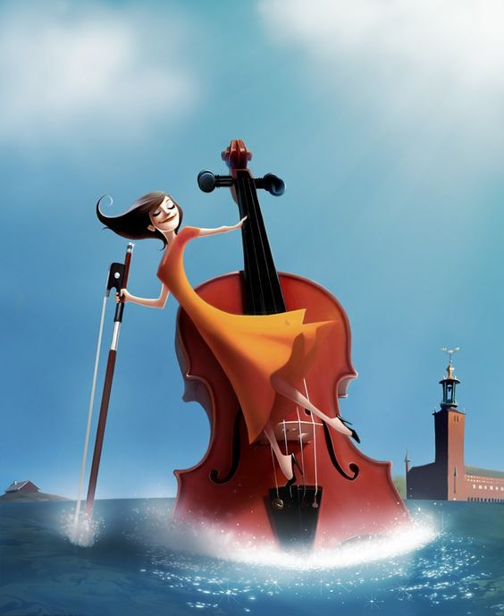
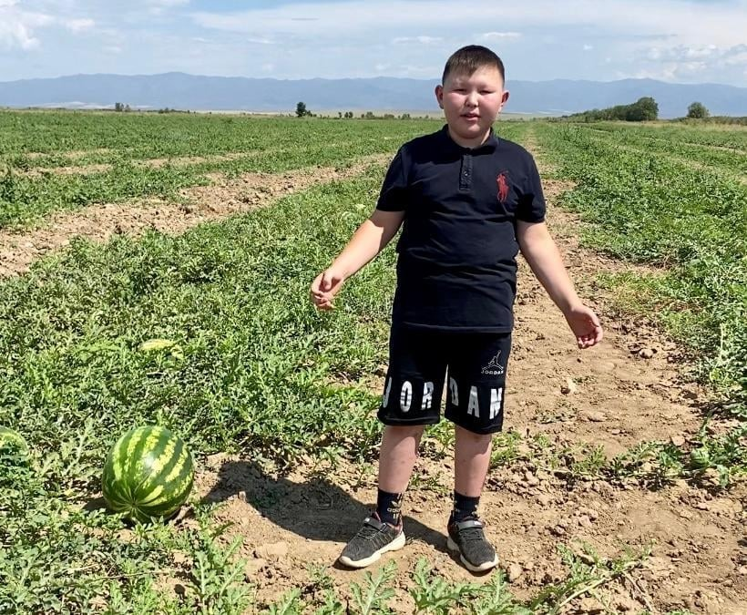
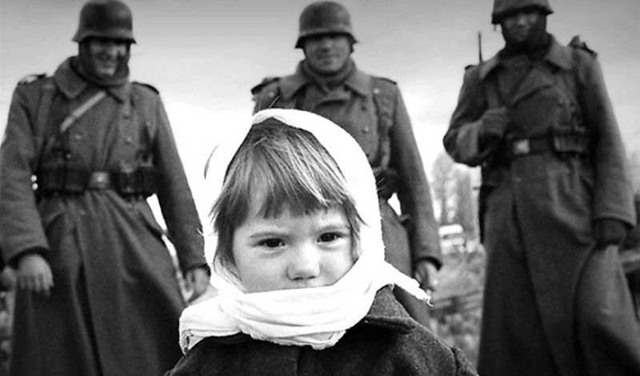
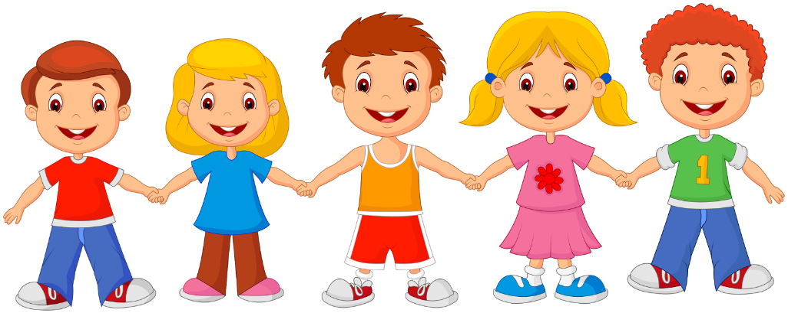
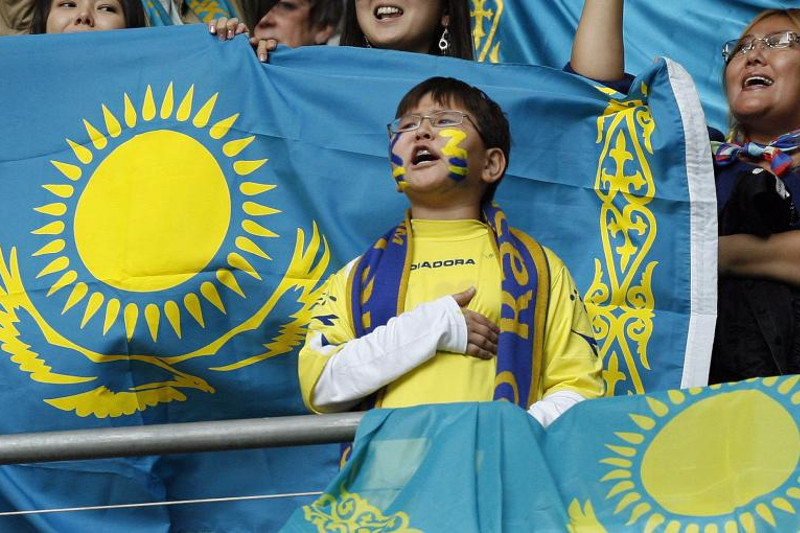
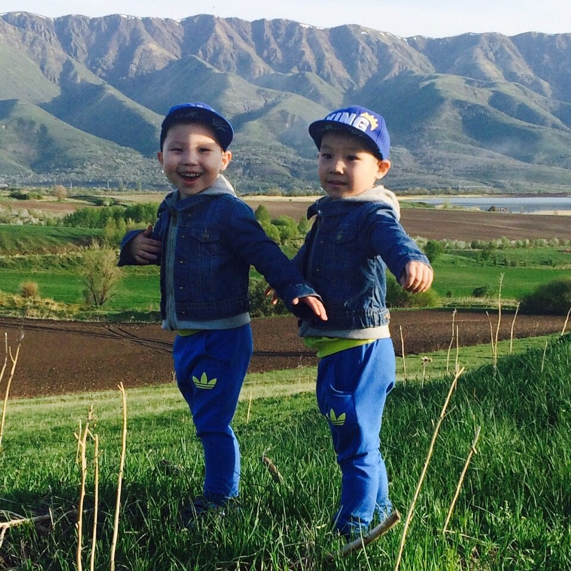
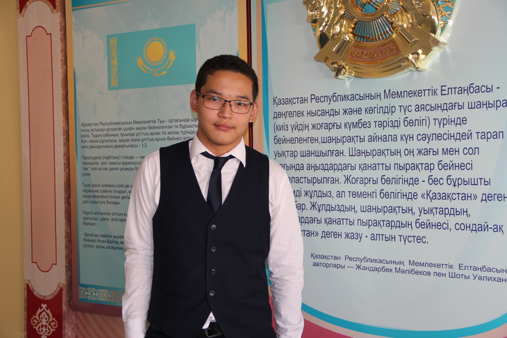
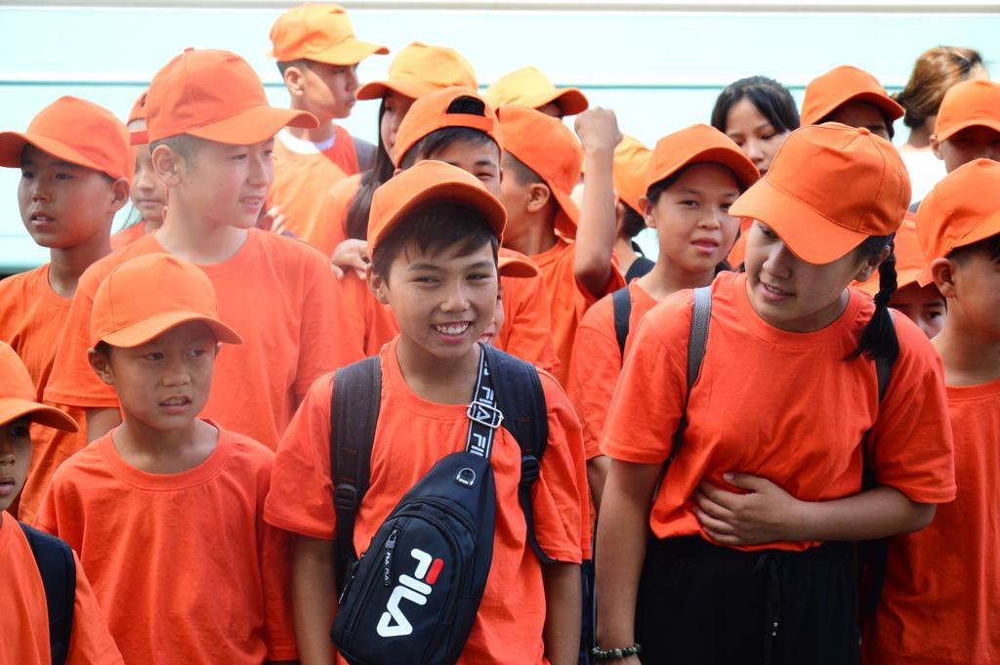

Виолончель немесе бас қобыз деген қандай аспап?
«Қандай аспап ұстап алғансың? Биіктігі өзіңнің бойыңмен бірдей ғой! Салмағы да ауыр шығар?!
Мынау скрипка ма,
əлде қобыз ба? Мына аспаптың пернелері қайда?». 8 жасар Айзереге осы сұрақтар жиі қойылады.
Ол музыка мектебінде
виолончель аспабында ойнауды үйреніп жүр. Алғашында аспаптың атын естігенде менің де абдырап
қалғаным бар. 6
жасынан бастап виолончель аспабын меңгеріп жүрген Айзере бір қарағанда скрипкаға, бір
жағынан қобызға ұқсайтын
аспап туралы түсінік беруден жалықпайды. Болашақта елде жоқ жаңа аспап түрін ойлап табуды
армандайды. Ол аспаптың
қандай болғанын қалайсың деген сауалға: «Үні қоңыр дауысты, ырғақты əуенге ыңғайлы болғанын
қалаймын. Бірақ
аспаптың аты қандай болатынын əлі ойлап жүрмін» деп жауап берді. Е.Рахмадиев атындағы Үржар
балалар музыка
мектебінің 3-сынып оқушысы Айзере Мұхамедқалиевадан неге виолончель аспабын таңдағаны
туралы, музыка мектебіндегі
тəртіп жайында сұрап білген едік. Ауыл баласына аты мен заты беймəлім аспап туралы біраз
мəліметке қанық болдық.
Сендер де біле жүріңдер, достар!
Толығырақ

Жалқаудың жаны тәтті, қарбыздың дәмі тәтті
«Жалқаудың жаны тәтті, қарбыздың дәмі тәтті». Бұл жаңа мақалды шығарған мен
емес. Авторы – он
жасар бизнесмен бала. Ол – Шығыс Қазақстан облысы, Үржар ауданы, Науалы ауылындағы Науалы
орта мектебінің
4-сынып оқушысы Ернұр Макенов. Ернұр жылда оқу жылы аяқталған соң қауын-қарбыз егіп,
суғарып, егін даласында
жұмыс істейді. Себебі оның атасы, әкесі, екі ағасы да егін шаруашылығымен айналысады. Біз
жақында егін
даласына барып, өнімін көзбен көріп қайттық. Ернұр үлкен әрі тәтті қарбыз өсірудің
құпиясымен бөлісті.
Толығырақ

Қуғын-сүргін кезінде балалар қалай зардап шекті?
Балалар, үлкендерден саяси қуғын-сүргін, «халық жауы», деткомбинат туралы естіп
пе едіңдер?
Кейбіреуің теледидар мен газет-журналдан, жоғары сыныпта оқитындарың тарих пәнінен ХХ
ғасырдың басында болған
саяси қуғын-сүргін туралы білетін шығарсыңдар. Кез келген қоғамда, кез келген уақытта
ересектермен бірге балалар
да өмір сүретіні белгілі. Ал репрессия кезінде әкесі «халық жауы» атанып, анасын арнайы
лагерьге әкеткенде
балалар қандай күйде болды екен деген сауал сендерді де мазалайтын шығар. Олай болса, бүгін
осы туралы
әңгімелейміз. Оқулыққа қосымша Тарихи деректерге сүйенсек, 1921 жылдан бастап 1954 жылға
дейін Кеңес Одағында
шамамен 3 млн 700 мың адам қуғын-сүргінге ұшырап, оның 600 мыңға жуығы өлім жазасына
кесілген. Қалғандары ұзақ
мерзімге бас бостандығынан айырылып, отбасын лагерьге айдаған. Қазақстандағы тұңғыш
репрессия 1928 жылы
Голощекиннің басшылығымен басталған. Репрессия дегеніміз – басып-жаншу, жою мақсатында
жүргізілетін жазалау
шарасы. Репрессия кезінде үкімет басшылары заң орындары арқылы халықтың зиялы өкілдерін
қуғынға ұшыратқан.
Толығырақ

Астанадан ауылға келген алтау
Жазғы каникулда ауылдың баласы қалаға, қаланың баласы ауылға барып демалуды
аңсайды. Жақында
біздің ауылға Нұр-Сұлтан қаласынан қонақ келді. Біреу-екеу емес, алтау. Олар жыл сайын жазғы
демалысын ауылда,
ата-әжесінің жанында өткізеді екен. Астанадан келген алты баладан ауыл мен қаланың
айырмашылығын, жазғы
демалыста қандай пайдалы іспен айналысатынын сұрадық.
Толығырақ

Мемлекеттік рәміздер не үшін керек?
4 маусым – мемлекеттік рәміздер күні. Ал мемлекеттік рәміздер қашан, қалай пайда
болған, оны кім,
не үшін ойлап тапқан? Мемлекеттік рәміздерді құрметтеген адамға айыппұл салынып, тіпті бас
бостандығынан
айыратын заң бар екенін білесің бе? Бүгін осы сұрақтарға жауап береміз.
Толығырақ

Егіздердің жұлдызды сағаты
Жер бетінде барлық құбылыс қатар жүреді. Жақсылық пен жамандық, күн мен түн, ақ
пен қара, табиғат
пен адам егіз деген ұғым қалыптасқан. Тіпті көз бен құлақтың, аяқ пен қолдың қос-қостан
болуының өзі өмірдің
заңдылығы сияқты. Сол сияқты егіз балалардың өмірге келуі де ерекше жаратылыстың белгісі.
Жақында
«Балдəурен-Қапшағай» Республикалық оқу-сауықтыру орталығында еліміздің түкпір-түкпіріндегі
егіз балалар мен
озат оқушылардың басын қосқан ерекше ауысым өтті. Ол «Егіздердің жұлдызды сағаты» деп
аталады. 17 жылдық
тарихы бар «Балдəурен» РОСО-да алғаш рет өткізіліп отырған ерекше ауысымның идея авторы –
орталықтың дамуына
үлкен үлес қосқан тəрбие кешені директоры қызметін атқарған Бағлан Батырбекұлы. Ауысымның
мақсаты – бір емес,
бірнеше баласын тəртіп пен тəрбиеге баулып отырған қоғамның еңбегін таныту. Ауысымға
Қазақстандағы қарапайым
балалар емес, шығармашылықта, спортта, оқуда түрлі жетістікке жетіп жүрген егіздер
шақырылған. Олар «Адалдық.
Достық. Балдəурен» атты танысу кеші, «Егіз-лебіз» атты топ визиткасын қорғау кеші, «Жастар»
педагогикалық
тобымен танысу кеші, «Шабыт» шығармашылық байқауы, «Дəлме-дəл» пародиялық байқауы, «Шын
көңілден қабыл ал!»
атты туған күн иелеріне арналған əн-би кеші, «Екі жұлдыз» байқауы, «Олимпия» спорттық
мерекесі, «Егіздер
сағаты» зияткерлік ойыны, «Бизнес-сити» бекет бойынша ойын жəне «Қош бол, Балдəурен!» əн-би
кешіне қатыса
алады. Бұл шаралардың қай-қайсысы да қызық өтеді екен. «Балдəуреннің» бірнеше ауысымында
қонақта болған
«Ұланның» тілшілері бұл жолы ауысымның ерекше өтіп жатқанын байқадық. Біз де «Егіздердің
жұлдызды сағатына»
куə болып, шығармашыл егіздермен танысу үшін демалыс күндері «Балдəурен-Қапшағай» РОСО-ға
барып, балалармен
əңгімелесіп қайттық.
Толығырақ

MURAT – ОҚУШЫ ЖАСАҒАН ОТАНДЫҚ БРЕНД
Алтын мен күміске қарағанда, түрлі тастан жасалған әшекейлерді үйлестіріп таққан
ұнайды. Басқа
қалаға, елге сапарға барғанда естелікке осындай заттар сатып аламын. Әлеуметтік желіде де
әшекей
жасайтындардың жұмысын бақылап отырамын. Жақында авторлық әшекейлер жасайтын Murat есімді
қолданушының
@mandala_art_kz парақшасымен таныстым. Табиғи тастардан ерекше дизайнмен әшекей жасайтын ол
Алматы қаласындағы
№58 мектепте 9-сынып оқиды екен. Толық аты-жөні – Есмұрат Қадір. Есмұраттың айтуынша, қол
еңбегі мен көз
еңбегін көп қажет ететін жұмыс болғандықтан, материалдың бағасына қарай мұндай әшекейлердің
құны
алтын-күмістен кем түспейді. Бірақ, мұны көп адам түсіне бермейді екен. Әшекей жасаудың
қызығы мен қиындығы
туралы Есмұраттың мектебіне барып, өзінен сұрап-біліп қайттық.
Толығырақ

Алакөл жағасындағы «Үржарайым» лагері
Адам өзінің балалық шағына оралу үшін қайта бала болуы міндетті емес. Бәріне
бала көңілмен қараса
болды. Жақында өзімнің балалық шағым өткен Алакөл жағасындағы «Үржарайым» лагеріне бардым.
Оқушы күнімде жазғы
демалысымның ең қызықты бір аптасы осы лагерьде өтетін. Алакөл жағалауы, сол лагерь, сол
ағаш үйлер, бұрынғы
күн тәртібі, тіпті, медбике апай да өзгермепті. Бәрі сол қалпында. Өзгерген мен ғана.
Есейгенмін. Бұл жолы
лагерьге демалушы емес, журналист болып бардым. Шығыс Қазақстан облыстық білім басқармасының
хабарлауынша,
биыл жаз маусымында облыс бойынша балаларға арналған 36 демалыс лагері жұмыс істейді екен.
«Үржарайым» –
солардың бірі де бірегейі. Лагерь биыл сегізінші жыл демалушыларын қабылдайды. Лагерь
құрылған жылдары оның
алғашқы демалушылары менің қатарластарым болды. Бірінші жылы Жарбұлақ ауылындағы Б.Майлин
атындағы мектептің
ғимаратында «Үржарайымның» тұсауын кескен едік. Ол кезде көлге шомылуға автобуспен
барып-келетінбіз.
Толығырақ
